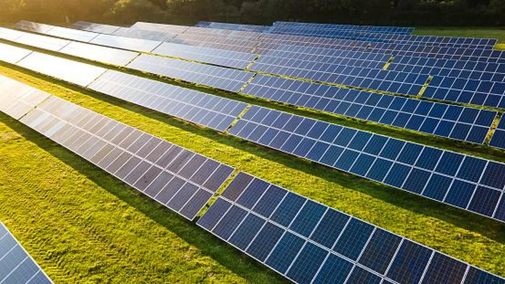

Placas solares fotovoltaicas
As placas solares, também conhecidas como módulos fotovoltaicos, são dispositivos capazes de converter a luz do sol em energia elétrica. Utilizando a tecnologia do efeito fotovoltaico, elas captam a radiação solar e a transformam em eletricidade limpa, renovável e sustentável. Essa alternativa vem ganhando destaque no Brasil e no mundo, tanto pelo seu potencial de economia quanto pelos benefícios ambientais.
A principal vantagem das placas solares está na redução da conta de luz. Ao gerar sua própria energia, o consumidor pode diminuir significativamente sua dependência da rede elétrica, e até zerar sua fatura mensal, dependendo do tamanho do sistema instalado. Além disso, a energia excedente pode ser injetada na rede pública, gerando créditos que podem ser utilizados posteriormente.
Outro ponto positivo é a durabilidade e baixa necessidade de manutenção. A maioria dos painéis solares possui vida útil de 25 a 30 anos, mantendo bom desempenho por décadas. Com uma instalação adequada e manutenções periódicas simples, o sistema funciona de forma segura e eficiente por longos períodos.
Do ponto de vista ambiental, a energia solar contribui diretamente para a redução da emissão de gases do efeito estufa, já que não depende da queima de combustíveis fósseis. Além disso, trata-se de uma fonte silenciosa e que não gera resíduos durante a geração de eletricidade, tornando-se uma opção ideal para residências, comércios, indústrias e até propriedades rurais.
Com a evolução da tecnologia, os sistemas solares estão se tornando cada vez mais acessíveis, eficientes e integrados a soluções inteligentes de gestão de energia. Investir em energia solar hoje não é apenas uma escolha sustentável, mas também uma estratégia econômica inteligente para o futuro.
Por que investir em energia solar em 2025?
O cenário energético global está em constante transformação, e a energia solar se destaca como uma das principais alternativas para quem busca independência energética e economia. Em 2025, com a alta nas tarifas de eletricidade e os incentivos ao uso de fontes renováveis, investir em placas solares se tornou mais vantajoso do que nunca.
Além da economia na conta de luz, a valorização do imóvel é outro benefício importante. Sistemas fotovoltaicos agregam valor à propriedade e são vistos como diferenciais positivos por compradores e investidores. Isso torna a energia solar uma solução que vai além da redução de custos, funcionando também como um investimento patrimonial.
Outro fator que impulsiona essa escolha é a evolução tecnológica dos equipamentos. Os painéis solares atuais, como os de tecnologia N-type bifacial, oferecem maior eficiência e durabilidade. Com garantias que chegam a 30 anos, os sistemas modernos entregam segurança, performance e retorno financeiro em longo prazo.
Intelbras e Canadian Solar: duas potências em tecnologia solar
A Intelbras, marca brasileira reconhecida por sua atuação em segurança eletrônica e comunicação, tem se consolidado também no mercado de energia solar. Com soluções voltadas para geração fotovoltaica, a empresa oferece módulos de alta eficiência, inversores, string boxes e suporte técnico especializado. Seus produtos se destacam pela qualidade, suporte nacional e fácil integração com sistemas já existentes, atendendo tanto projetos residenciais quanto comerciais.
Já a Canadian Solar é uma das maiores fabricantes globais de módulos solares, com presença em mais de 160 países. Fundada no Canadá, a empresa combina tecnologia de ponta com grande capacidade de produção, oferecendo painéis com alta performance, como os modelos com células monocristalinas PERC e N-type. A Canadian é referência em inovação e eficiência energética, sendo uma escolha sólida para grandes usinas solares e projetos que exigem alto rendimento a longo prazo.
